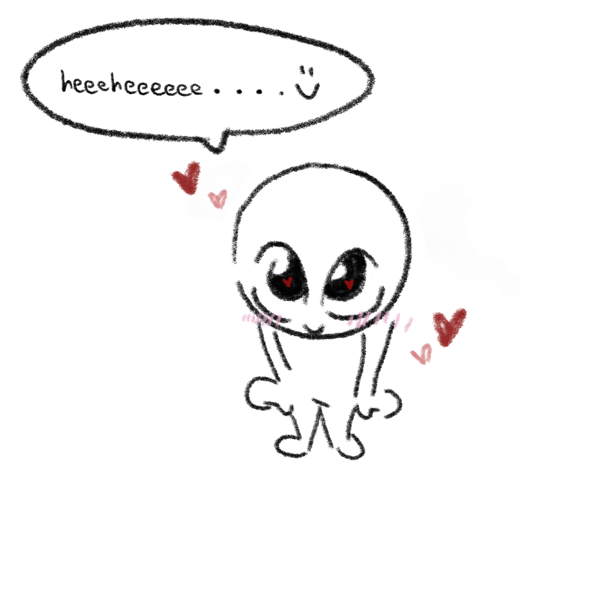
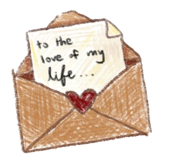
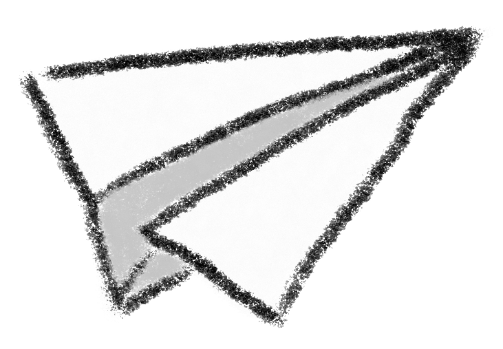
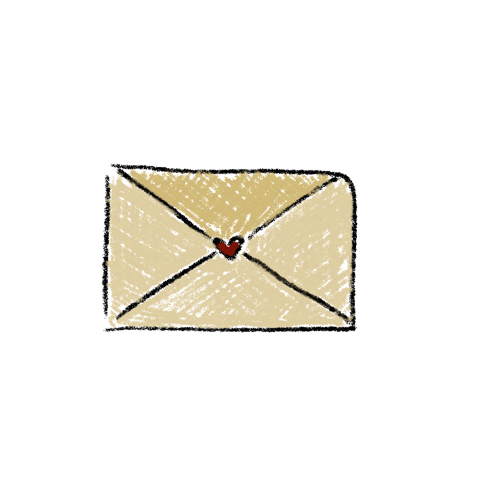

but firstttt...

Letter for You <3


to my dearest logong,
HAPPY NATIONAL BOYFRIEND DAYYY!!!
i just learned about this holiday like two days ago so consider i had literally two days a website is the best intangible gift I could give you imo :P please tolerate the bad interface and whatever is buggy about this website cus obviously i did not know shit about coding or programming or anything like that. . . oh btw in case you couldn't tell this font is my handwriting (i custom made it cus i wanted this to feel more like a letter heehee ) and dont mind the ugly asf visuals cus i drew everything lmao like literally every single thing you see is drawn by yours truly (guess why i picked this art style its totally because of the aesthetics)
anyways im very sorry for telling you im busy today aka your yesterday night, and that im writing an english essay or making econ notes blah blah blah. . . ES FALSO!!!! i was in fact making you this thing HEEHEEEE
okay enough fai waa. . . first of all i love you so much, ik you love me too since you had to admit that OR ELSE YOU WOULDNT BE READING THIS LETTER, HEEEEHEEEEEEEEE!!! even tho youve only been my boyfriend for a week, i have felt like the most loved girl in the whole universe. september is hard, ib is hard, life is hard (you know what else is hard?OKSORRY),but you have been here for me through every second of it, no matter the happy moments, or the not so happy ones heehee
AHH I NEEDA STOP WRITING or else ill have nothing to write for ur birthday card. . . but i hope you know that i love u forever and forever, MORE THAN YOU!!! im even willing to touch this nerd stuff to try and relate to your lifestyle LMAO but it was a fun experience. thanks to you, i now know how to code css and html and create github respiratories. te amo por siempre para siempre :)) SEE U IN CALL!!!
your best bb ever <3